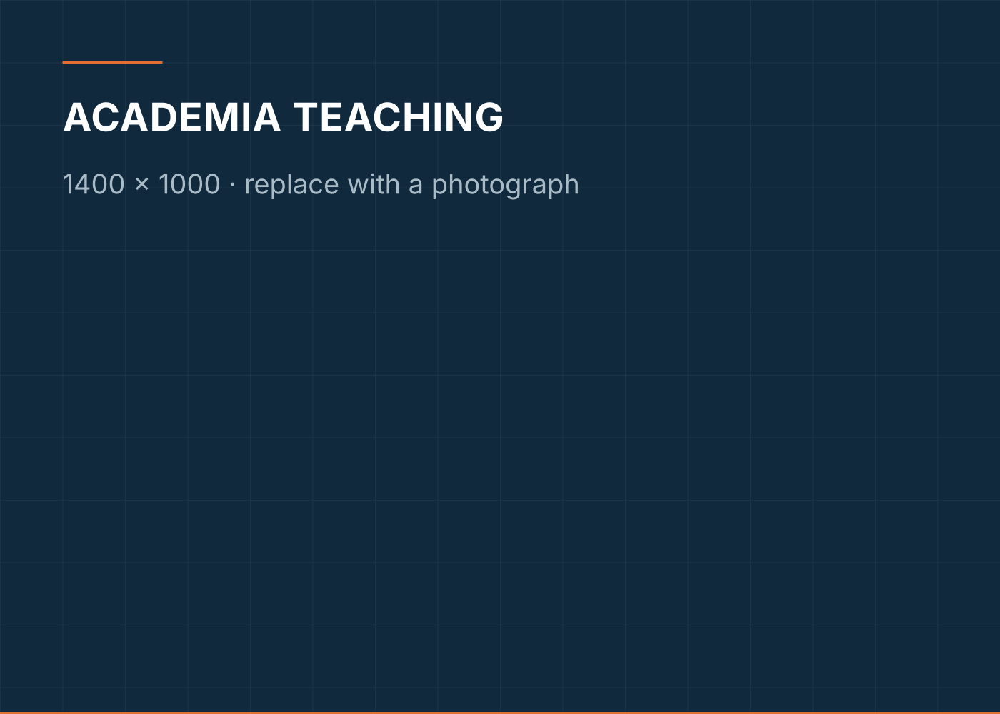

Educate
The fundamentals do not go out of date.
Structural analysis, strength of materials and mechanics of solids are what every later technology rests on. Seventeen years of teaching has not changed that.
Teaching
Structural Analysis. Strength of Materials. Mechanics of Solids.
These are the subjects I have taught longest, and they are the ones every later technology depends on. A student who can read a bending moment diagram can learn to operate a concrete printer. The reverse is not true.
I have taught undergraduate and postgraduate civil engineering since 2008, across four appointments, including two years as Head of Department at ASL Pauls College of Engineering and Technology. Teaching has been continuous through all of it — through the doctorate, through the administrative roles, and through the research.

Research supervision
Scholars are part of the work, not an overhead.
Four doctorates completed, three in progress, and more than fifteen M.Tech. projects guided.
Completed doctorates include Dr. T. V. Sheeja, whose research was in additive manufacturing and 3D-printable cementitious materials.
- Ms. Anitha Varghese — Supervisor. Zeroth DC, March 2026
- Mr. S. Ringle Raja — Joint Supervisor. Machine Learning Framework for Classification and Forecasting of Fabrication Dynamics in Pre-Engineered Buildings. Synopsis stage, August 2025
Doctoral Committee member for research scholars within and outside the Division of Civil Engineering.
Qualifications
Education
October 2018
Ph.D. in Civil Engineering
Karunya Institute of Technology and Sciences, Coimbatore
Doctoral research proposed the confinement of masonry infills in RC moment-resisting frames using cost-effective skin reinforcement. Experimental, analytical and numerical studies showed improved in-plane resistance without adding significant mass.
2008
M.Tech. in Structural Engineering
Karunya Institute of Technology and Sciences, Coimbatore
Thesis on the influence of steel roof truss configuration on truss strength.
2006
B.E. in Civil Engineering
Arulmigu Kalasalingam College of Engineering, Srivilliputtur
Appointments
Professional experience
October 2013 – present
Assistant Professor
Karunya Institute of Technology and Sciences, Coimbatore
Teaching UG and PG courses; guiding Ph.D., PG and UG research; institutional quality assurance through the IQAC.
July 2011 – October 2013
Assistant Professor and Head of Department
ASL Pauls College of Engineering and Technology, Coimbatore
Departmental administration and development in coordination with the Principal, alongside undergraduate teaching and research.
July 2009 – June 2011
Assistant Professor
PSN Engineering College, Tirunelveli
Undergraduate teaching and project guidance.
June 2008 – May 2009
Assistant Professor
Karunya Institute of Technology and Sciences, Coimbatore
UG and PG teaching and project guidance.
Academic service
Editorial and peer review
Reviewing is how a field maintains itself. It is unpaid, uncredited and necessary.
Editorial and advisory
- Advisory Board Member, International Journal of Research on Engineering Structures and Materials (JRESM) (2022, 2023 and 2024)
Peer review
- Journal of Building Engineering Elsevier — Multiple manuscripts and revisions, 2020–2023
- Construction and Building Materials Elsevier
- Journal of Constructional Steel Research Elsevier — 2025
- Scientific Reports Springer Nature — 2025
- Earthquakes and Structures Techno-Press — 2022
- Journal of Engineering Science and Technology Review
- Journal of Critical Reviews — 2020
- International Conference on Structural Integrity and Interactions of Materials in Civil Engineering Structures (SIIMCES-2025) SRM University
Continuing development
Still a student of the subject.
- Three-day Faculty Development Programme — Centre for Continuing Education, IIT Mandi May 2026
- Web of Science Training Session — Clarivate — KITS Campus, Coimbatore 9 July 2026
- Outcome Based Education (ED-SP-07-14) — NITTTR Chennai August 2024
- Construction Project Management in Bullet Train Projects — Ascend School of Construction Business September 2023
- Role of Academia towards Sustainable Development — IQAC, Karunya Institute of Technology and Sciences February 2023
- Staff Enrichment Programmes — Karunya Institute of Technology and Sciences February 2025 and December 2025
Professional bodies
Memberships
- International Association of Engineers (IAENG)
- Life Member, Institute of Research Engineers and Doctors (IRED)
- Institute of Engineering Research and Publication (IFERP)
Conference papers and book chapter
Alongside the refereed journal record, the following conference papers and book chapter are on file.
Book chapter
- Daniel, C., Sarala, S., Vincent Sam Jebadurai, S., Arunraj, E., Hemalatha, G.. Innovative Teaching Practices for 4G Students. https://doi.org/10.34256/iorip191
Conference papers
- Rajkumar, D., Vincent Sam Jebadurai, S. (2014). Seismic Performance Study and Analysis of Confinement of Brick. Proceedings of ROCKFEST 14, PSN Engineering College, Tirunelveli.
- Dhechyani, J., Vincent Sam Jebadurai, S. (2014). Analytical Study on Confined Brick Masonry with Bracings. Proceedings of ROCKFEST 14, 24 March 2014, PSN Engineering College, Tirunelveli.
- Babu, C., Vincent Sam Jebadurai, S. (2015). Behaviour of Confined Masonry Wall Under Cyclic Load. Proceedings of National Conference ICON 2015, Sona College of Technology, Salem.
- Vincent Sam Jebadurai, S., Rajkumar, D. (2014). Analytical and Performance Study of Confinement of Brick Masonry with Openings under Seismic Condition. National Conference on Technological Innovations in Structural Engineering, Anna University, Coimbatore.
- Vincent Sam Jebadurai, S., Tensing, D., Marlene A. Jasper (2014). Behaviour of Masonry Wall Confined Using Steel Mesh and Bracing. National Conference on Recent Advances in Civil Engineering Research, Karunya Institute of Technology and Sciences, Coimbatore.
- Babu, C., Vincent Sam Jebadurai, S., Tensing, D. (2015). Innovations in Civil Engineering Systems for Sustainable Construction. Proceedings of UGC Sponsored National Conference, Coimbatore Institute of Technology, Coimbatore.
Considering doctoral research?
I supervise in structural engineering, additive manufacturing in construction and applied machine learning for the built environment.